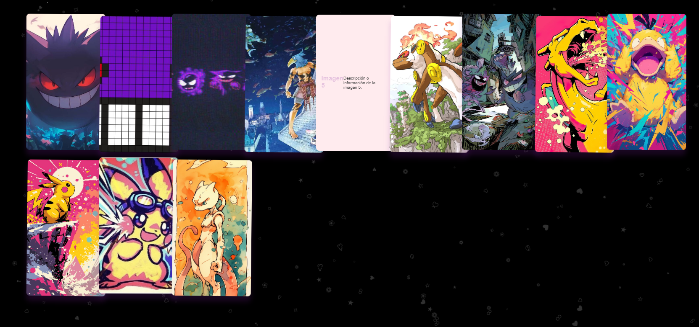

Carta De Amor
Una carta animada que se abre al hacer clic, revelando un mensaje oculto en su interior.
Mi Corazón Por Ti
Un corazón late en pantalla y, al hacer clic en él, revela cuántos días ha latido mi corazón por ti. Un detalle simple, visual y lleno de cariño.

Feliz Cumpleaños
Una escena interactiva de cumpleaños con torta animada, regalo y portarretrato, acompañada de confeti, música y efectos visuales festivos.

¿Quieres Ser Mi Amorcito?
Un boton travieso que siempre huye cuando intentas decir “No”, hasta que solo queda una opción: aceptar el “Sí”. Al hacerlo, aparece un mensaje romántico.

Fuegos Artificiales
Un espectáculo visual de fuegos artificiales animados en tiempo real usando JavaScript y Canvas, con explosiones interactivas y efectos brillantes.

Tic Tac Toe
El clásico “3 en raya”, ahora con diseño moderno, animaciones y dos modos de juego: entre jugadores o contra el bot.